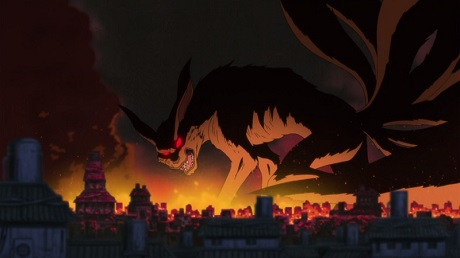
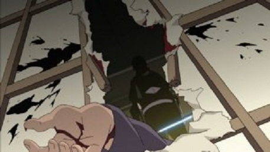
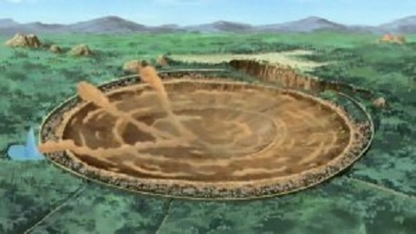

Welcome to Konoha
Конохагакуре но Сато (木ノ葉隠れの里, "Селение, скрытое в листве"), оно же Коноха — Какурезато, расположенное в Хи но Куни. Как одно из Шиноби Годайкоку, Конохагакуре имеет Каге в качестве своего лидера, известного как Хокаге, которых в истории деревни было семеро. Коноха располагается глубоко внутри леса у подножия горы, известной как Монумент Хокаге, на которой выгравированы лица всех, кто когда-либо занимал пост Хокаге. В основном показанное как наиболее мощное Какурезато, Коноха провела множество лет в относительном покое и стабильности. Стандартное одеяние шиноби Конохи состоит из синей или чёрной рубашки, на которой могут присутствовать или отсутствовать спиралевидные узоры на плечах, наряду со штанами того же цвета под зелёным бронежилетом, который также имеет красный спиральный узор на спине и карманы в области груди. Они также предпочитают обвязывать ноги бинтами. Многие ниндзя Конохи используют техники Катона.
История Основание
В эпоху Сенгоку Джидай шиноби были организованы в небольшие наёмные кланы, которые жили одними лишь сражениями. Двумя сильнейшими кланами были Сенджу и Учиха, которые бились друг с другом на протяжении всей своей истории. В конце концов, с намерением положить конец бесчисленным кровопролитиям, Сенджу Хаширама использует свою позицию как лидера клана для заключения перемирия с кланом Учиха через их лидера, своего друга детства Учиха Мадару. Таким образом, Сенджу, Учиха и их соответствующие примкнувшие кланы образовали первую деревню шиноби, Конохагакуре — название, придуманное самим Мадарой. В скором времени, другие деревни также начинают своё формирование, следуя примеру Конохи и знаменуя этим окончание эпохи Сенгоку Джидай.
Нападение Кьюби на Коноху
 После окончания Третьей мировой войны Ниндзя Хирузен выбрал Минато своим преемником в качестве Йондайме Хокаге. Тем не менее, вскоре после вступления Минато в должность, человек в маске похитил жену Минато, текущего Джинчурики Кьюби Узумаки Кушину, после того как она родила их сына Узумаки Наруто, и извлёк из неё зверя, которого затем использовал для нападения на Коноху. Минато удалось победить человека, однако Кьюби оказался более серьёзным противником. Не имея иного выбора, Минато и Кушина пожертвовали собственными жизнями, чтобы запечатать Кьюби в своём новорождённом сыне. Многие ниндзя погибли, защищая деревню, и многие выжившие обвиняли Наруто в действиях Кьюби. Хирузен, вынужденный вернуться на пост Хокаге, запретил кому-либо упоминать Кьюби, в надежде, что будущее поколение не будет ненавидеть Наруто, как это делали их родители.
Уничтожение клана Учиха
Руководство Конохи считало клан Учиха ответственным за нападение Кьюби но Йоко, в связи с чем они отгородили членов клана от управления деревней. Возмущённые ущемлением своих прав, многие Учиха начали готовить государственный переворот, чтобы отвоевать влияние над Конохой. Тем не менее, некоторые Учиха видели опасность в этом начинании. Одним из них оказался Учиха Итачи, который стал шпионом для руководства Конохи. После того как мирные переговоры окончились неудачей, Шимура Данзо приказал Итачи уничтожить собственный клан в обмен на возможность сохранения жизни его младшего брата, Саске. Итачи, при поддержке Тоби, выполнил приказ, но обставил события так, чтобы казалось, что он действовал один и ведомый эгоистическими побуждениями, чтобы Саске когда-нибудь отомстил ему за то, что он сделал с их семьёй.
Нападение Пейна
Более чем через три года после провалившегося Коноха Кузуши, Акацки в лице Пейн Рикудо атакует Коноху с целью захвата Наруто. Силы Конохи имели некоторый успех, сражаясь с Пейнами индивидуально, но оказались бессильны против уничтожения деревни, вызванного Шинра Тенсей. Вскоре после этого Наруто возвращается в Коноху и побеждает Пейна перед тем, как столкнуться с Нагато, человеком, стоявшим за Пейном. После того, как Наруто убеждает его в ошибочности своих действий, Нагато жертвует своей жизнью, чтобы воскресить всех, кто погиб при вторжении. Тсунаде впадает в кому вследствие истощения, защищая Коноху от Пейна, из-за чего Шимура Данзо временно вступает в должность как её замена. Данзо руководит началом длительного процесса восстановления деревни и разбирается с прямыми последствиями нападения Пейна. Жители деревни решают отстроить селение на прежнем месте вместо новой местности, мотивируя это желание ощущением, что Коноха находится там же, где и Монумент Хокаге.